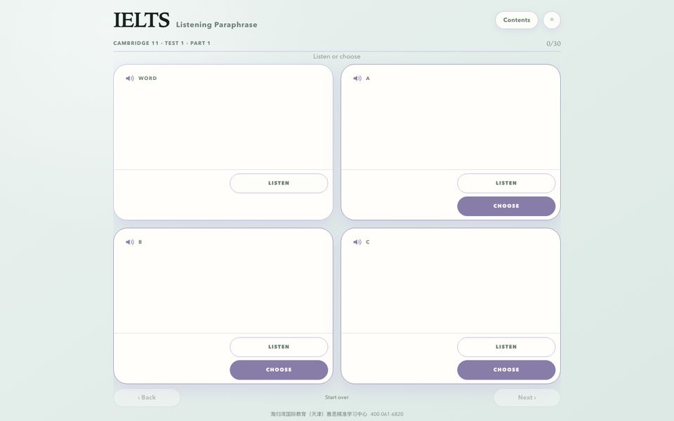

IELTS Listening Paraphrase 雅思听力同义替换
Hear the words IELTS actually tests, then catch their paraphrases by ear.
听真题里的考点词，再从四个读音选项里听出它的同义替换。
- Every tested word and its paraphrase from Cambridge IELTS 11–20 Listening
- 3,654 natural British-voice recordings, one for every word and answer choice